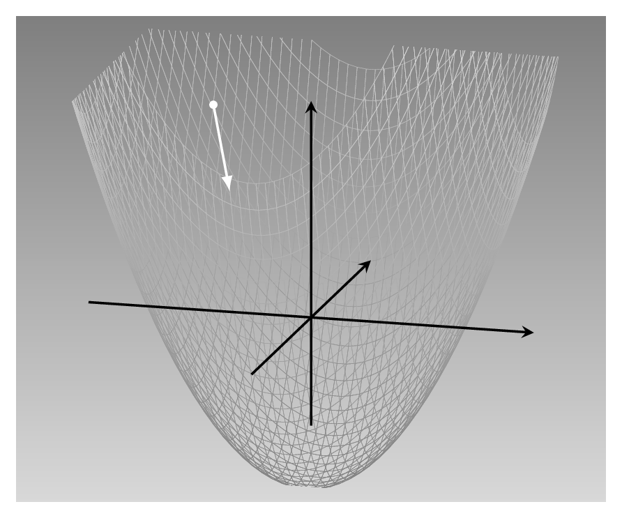
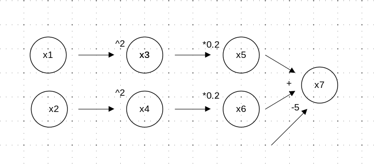

library(torch)
x1 <- torch_tensor(2, requires_grad = TRUE)
x2 <- torch_tensor(2, requires_grad = TRUE)4 Autograd
In the last chapter, we have seen how to manipulate tensors, and encountered a sample of mathematical operations one can perform on them. If those operations, numerous though they may be, were all there was to core torch, you would not be reading this book. Frameworks like torch are so popular because of what you can do with them: deep learning, machine learning, optimization, large-scale scientific computation in general. Most of these application areas involve minimizing some loss function. This, in turn, entails computing function derivatives. Now imagine that as a user, you had to specify the functional form of each derivative yourself. Especially with neural networks, this could get cumbersome pretty fast!
In fact, torch does not work out, nor store, functional representations of derivatives either. Instead, it implements what is called automatic differentiation. In automatic differentiation, and more specifically, its often-used reverse-mode variant, derivatives are computed and combined on a backward pass through the graph of tensor operations. We’ll look at an example for this in a minute. But first, let’s quickly backtrack and talk about why we would want to compute derivatives.
4.1 Why compute derivatives?
In supervised machine learning, we have at our disposal a training set, where the variable we’re hoping to predict is known. This is the target, or ground truth. We now develop and train a prediction algorithm, based on a set of input variables, the predictors. This training, or learning, process, is based on comparing the algorithm’s predictions with the ground truth, a comparison that leads to a number capturing how good or bad the current predictions are. To provide this number is the job of the loss function.
Once it is aware of the current loss, an algorithm can adjust its parameters – the weights, in a neural network – in order to deliver better predictions. It just has to know in which direction to adjust them. This information is made available by the gradient, the vector of derivatives.
As an example, we imagine a loss function that looks like this (fig. 4.1):

This is a quadratic function of two variables: \(f(x_1, x_2) = 0.2 {x_1}^2 + 0.2 {x_2}^2 - 5\). It has its minimum at (0,0), and this is the point we’d like to be at. As humans, standing at the location designated by the white dot, and looking at the landscape, we have a pretty clear idea how to go downhill fast (assuming we’re not scared by the slope). To find the best direction computationally, however, we compute the gradient.
Take the \(x_1\) direction. The derivative of the function with respect to \(x_1\) indicates how its value varies as \(x_1\) varies. As we know the function in closed form, we can compute that: \(\frac{\partial f}{\partial x_1} = 0.4 x_1\). This tells us that as \(x_1\) increases, loss increases, and how fast. But we want loss to decrease, so we have to go in the opposite direction.
The same holds for the \(x_2\)-axis. We compute the derivative (\(\frac{\partial f}{\partial x_2} = 0.4 x_2\)). Again, we want to take the direction opposite to where the derivative points. Overall, this yields a descent direction of \(\begin{bmatrix}-0.4x_1\\-0.4x_2 \end{bmatrix}\).
Descriptively, this strategy is called steepest descent. Commonly referred to as gradient descent, it is the most basic optimization algorithm in deep learning. Perhaps unintuitively, it is not always the most efficient way. And there’s another question: Can we assume that this direction, computed at the starting point, will remain optimal as we continue descending? Maybe we’d better regularly recompute directions instead? Questions like this will be addressed in later chapters.
4.2 Automatic differentiation example
Now that we know why we need derivatives, let’s see how automatic differentiation (AD) would compute them.
This (fig. 4.2) is how our above function could be represented in a computational graph. x1 and x2 are input nodes, corresponding to function parameters \(x_1\) and \(x_2\). x7 is the function’s output; all other nodes are intermediate ones, necessary to ensure correct order of execution. (We could have given the constants, -5 , 0.2, and 2, their own nodes as well; but as they’re remaining, well, constant anyway, we’re not too interested in them and prefer having a simpler graph.)

In reverse-mode AD, the flavor of automatic differentiation implemented by torch, the first thing that happens is to calculate the function’s output value. This corresponds to a forward pass through the graph. Then, a backward pass is performed to calculate the gradient of the output with respect to both inputs, x1 and x2. In this process, information becomes available, and is built up, from the right:
At
x7, we calculate partial derivatives with respect tox5andx6. Basically, the equation to differentiate looks like this: \(f(x_5, x_6) = x_5 + x_6 - 5\). Thus, both partial derivatives are 1.From
x5, we move to the left to see how it depends onx3. We find that \(\frac{\partial x_5}{\partial x_3} = 0.2\). At this point, applying the chain rule of calculus, we already know how the output depends onx3: \(\frac{\partial f}{\partial x_3} = 0.2 * 1 = 0.2\).From
x3, we take the final step tox. We learn that \(\frac{\partial x_3}{\partial x_1} = 2 x_1\). Now, we again apply the chain rule, and are able to formulate how the function depends on its first input: \(\frac{\partial f}{\partial x_1} = 2 x_1 * 0.2 * 1 = 0.4 x_1\).Analogously, we determine the second partial derivative, and thus, already have the gradient available: \(\nabla f = \frac{\partial f}{\partial x_1} + \frac{\partial f}{\partial x_2} = 0.4 x_1 + 0.4 x_2\).
That is the principle. In practice, different frameworks implement reverse-mode automatic differentiation differently. We’ll catch a glimpse of how torch does it in the next section.
4.3 Automatic differentiation with torch autograd
First, a quick note on terminology. In torch, the AD engine is usually referred to as autograd, and that is the way you’ll see it denoted in most of the rest of this book. Now, back to the task.
To construct the above computational graph with torch, we create “source” tensors x1 and x2. These will mimic the parameters whose impact we’re interested in. However, if we just proceed “as usual”, creating the tensors the way we’ve been doing so far, torch will not prepare for AD. Instead, we need to pass in requires_grad = TRUE when instantiating those tensors:
(By the way, the value 2 for both tensors was chosen completely arbitrarily.)
Now, to create “invisible” nodes x3 to x6 , we square and multiply accordingly. Then x7 stores the final result.
x3 <- x1$square()
x5 <- x3 * 0.2
x4 <- x2$square()
x6 <- x4 * 0.2
x7 <- x5 + x6 - 5
x7torch_tensor
-3.4000
[ CPUFloatType{1} ][ grad_fn = <SubBackward1> ]Note that we have to add requires_grad = TRUE when creating the “source” tensors only. All dependent nodes in the graph inherit this property. For example:
x7$requires_grad[1] TRUENow, all prerequisites are fulfilled to see automatic differentiation at work. All we need to do to determine how x7 depends on x1 and x2 is call backward():
x7$backward()Due to this call, the $grad fields have been populated in x1 and x2:
x1$grad
x2$grad 0.8000
[ CPUFloatType{1} ]
torch_tensor
0.8000
[ CPUFloatType{1} ]These are the partial derivatives of x7 with respect to x1 and x2, respectively. Conforming to our manual calculations above, both amount to 0.8, that is, 0.4 times the tensor values 2 and 2.
How about the accumulation process we said was needed to build up those end-to-end derivatives? Can we “follow” the end-to-end derivative as it’s being built up? For example, can we see how the final output depends on x3?
x3$grad[W TensorBody.h:470] Warning: The .grad attribute of a Tensor
that is not a leaf Tensor is being accessed. Its .grad attribute
won't be populated during autograd.backward().
If you indeed want the .grad field to be populated for a
non-leaf Tensor, use .retain_grad() on the non-leaf Tensor.[...]
torch_tensor
[ Tensor (undefined) ]The field does not seem to be populated. In fact, while it has to compute them, torch throws away the intermediate aggregates once they are no longer needed, to save memory. We can, however, ask it to keep them, using retain_grad = TRUE:
x3 <- x1$square()
x3$retain_grad()
x5 <- x3 * 0.2
x5$retain_grad()
x4 <- x2$square()
x4$retain_grad()
x6 <- x4 * 0.2
x6$retain_grad()
x7 <- x5 + x6 - 5
x7$backward()Now, we find that x3’s grad field is populated:
x3$gradtorch_tensor
0.2000
[ CPUFloatType{1} ]The same goes for x4, x5, and x6:
x4$grad
x5$grad
x6$gradtorch_tensor
0.2000
[ CPUFloatType{1} ]
torch_tensor
1
[ CPUFloatType{1} ]
torch_tensor
1
[ CPUFloatType{1} ]There is one remaining thing we might be curious about. We’ve managed to catch a glimpse of the gradient-accumulation process from the “running gradient” point of view, in a sense; but how about the individual derivatives that need to be taken in order to proceed with accumulation? For example, what x3$grad tells us is how the output depends on the intermediate state at x3; how do we get from there to x1, the actual input node?
It turns out that of that aspect, too, we can get an idea. During the forward pass, torch already takes a note on what it will have to do, later, to calculate the individual derivatives. This “recipe” is stored in a tensor’s grad_fn field. For x3, this adds the “missing link” to x1:
x3$grad_fnPowBackward0The same works for x4, x5, and x6:
x4$grad_fn
x5$grad_fn
x6$grad_fnPowBackward0
MulBackward1
MulBackward1And there we are! We’ve seen how torch computes derivatives for us, and we’ve even caught a glimpse of how it does it. Now, we are ready to play around with our first two applied tasks.